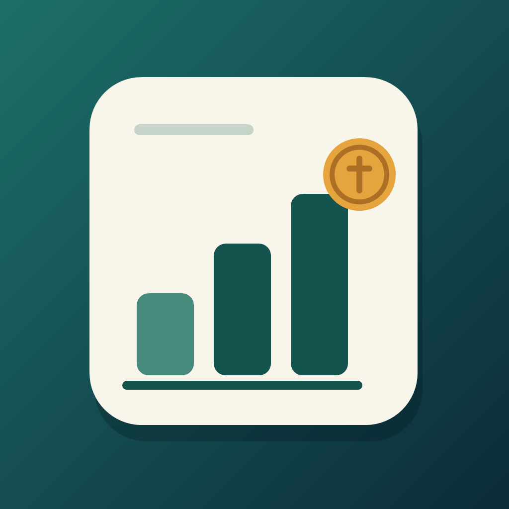
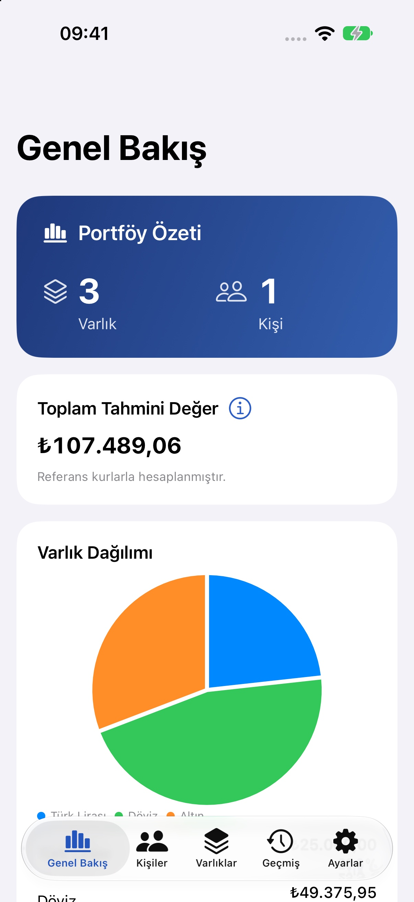
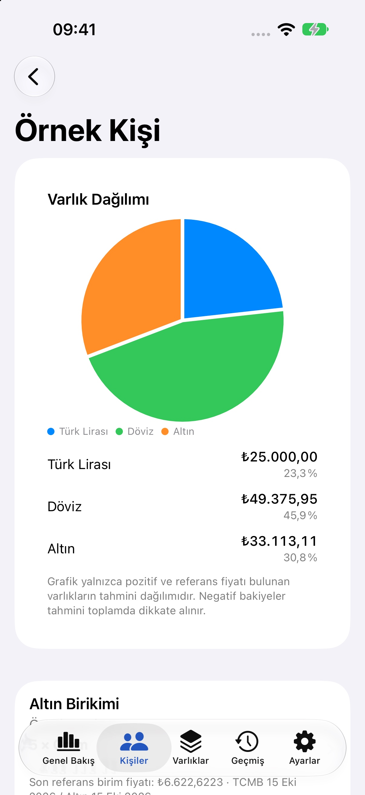
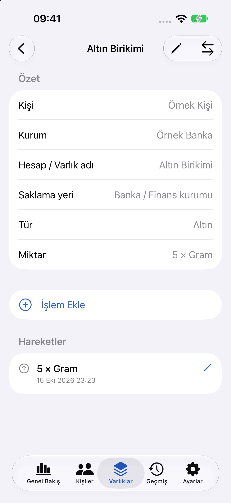
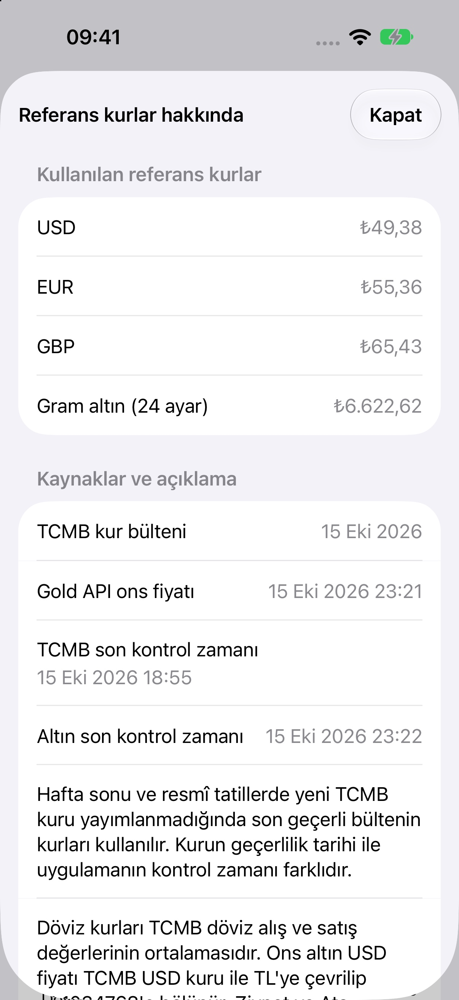
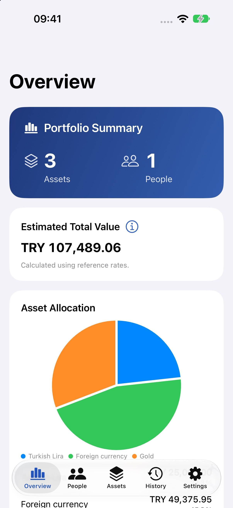
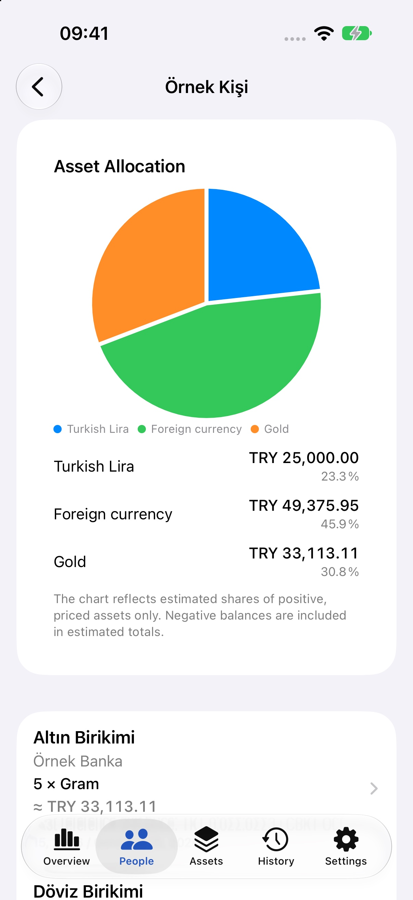
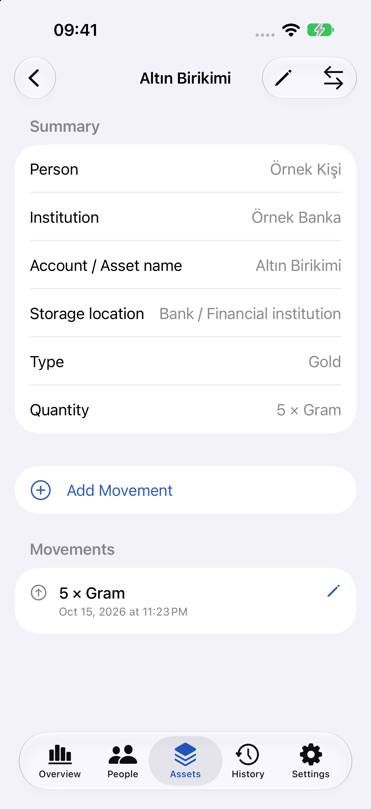
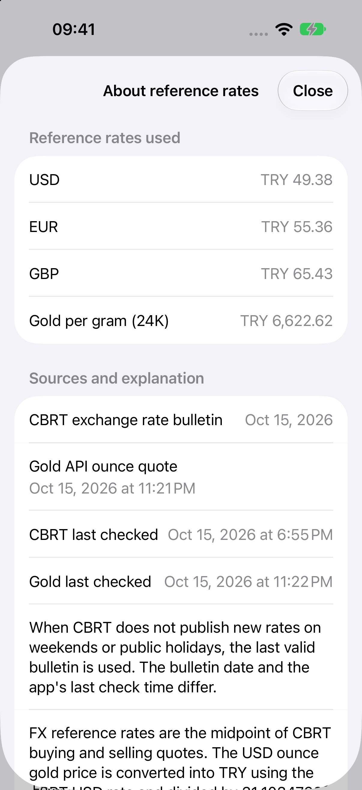

Kişiye göre düzenleyin
Farklı kişilere ait kayıtları ayrı tutun. Arama ve filtrelerle ihtiyaç duyduğunuz kayda ulaşın.

Kişisel kayıt ve takip
Para, altın ve menkul kayıtlarınızı kişi, kurum ve saklama yerine göre düzenleyin. Neye sahip olduğunuzu ve nelerin değiştiğini takip edin.
Kişiler, varlıklar ve geçmiş tek çalışma alanında.
Farklı kişilere ait kayıtları ayrı tutun. Arama ve filtrelerle ihtiyaç duyduğunuz kayda ulaşın.
Banka, aracı kurum, dijital platform veya fiziksel yer. Her kaydın nerede tutulduğunu not edin.
Miktar değişikliklerini, düzeltmeleri ve kayıtlar arası aktarımları notlarıyla takip edin.
İsteğe bağlı iCloud
Apple ile giriş yaparak ayrı bir iCloud çalışma alanı kullanın. Özel davetlerle paylaşın; katılımcılar kayıtları düzenlesin, paylaşımı sahibi yönetsin.
Yerel kayıtlar giriş yapınca otomatik olarak buluta taşınmaz. Yerel çalışma alanını hesap açmadan kullanabilirsiniz.
Çalışma alanları hakkında →Gerçek uygulama ekranları
1.2 için hazırlanan geliştirme arayüzü; yalnız anonim örnek veriler gösterilmiştir. Ekranlardaki referans fiyatlar kayıt tarihine aittir.







